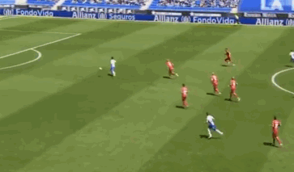
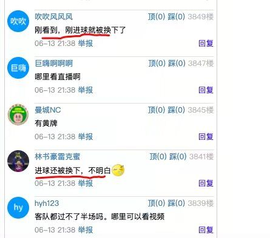

原谅足球 2020-06-13
北京时间6月13日，在今天西甲联赛重燃战火，中国第一国脚巨星武磊代表西班牙人队对阵阿拉维斯队，这场比赛武磊得到了首发的机会，结果武磊非常争气，在下半场比赛打到99秒的时候闪击破门得分。

在上半场的比赛当中，西班牙人队在第20分钟的时候获得了非常关键的优势，当时是西班牙人队后场长传打过来，而武磊高速的前插去争这个头球的机会。结果对方门将帕切科心急之下呢，跑出禁区之外用手接球被裁判红牌罚下，西班牙人队11打10获得了极为宝贵的优势，此后武磊连续获得射门的机会，当时他连续两脚精彩的射门都被对方的替补门将罗贝托扑出，不过在上半场比赛结束之前，西班牙人队的贝尔纳多终于抓住机会头球破门得分，帮助球队首开纪录。
这一球给西班牙人队带来了好运，下半场开场仅仅99秒的时间，武磊和队友打出非常精彩的配合，队友挑传打到防线身后武磊反越位突进，带球长驱直入，面对着门将，轻松的将球推进，2:0！这个球几乎为球队锁定了胜局，武磊进球时候重情的欢呼，不知道他此前经历的人完全无法对它的体会感同身受，这是因为武磊和自己的妻子钟佳蓓在此之前呢，都曾经换上了而新冠肺炎，两人经历了非常艰难的岁月，才终于走了出来，武磊一度害怕自己的职业生涯就此终结，毕竟这次我们看到有那么多的人在疫情当中不幸去世了。
武磊这一球打出了中国球员的风采，让人格外的感动。在武磊破门之后，场上却出现了一个令人非常难解的举动，仅仅过去了2分钟的时间武磊就被换下了场。主教练阿贝拉多用主力前锋德托马斯将他换下，德托马斯最近一段时间的还处在康复期，他此前受到了大腿肌肉拉伤的困扰，所以这场比赛武磊得到了首发的机会。
阿贝拉多的举动让很多球迷不满，不少中国球迷都纷纷在社交媒体上痛斥武磊的教练，大家表示：“武球王不被换下有机会梅开二度。”“刚看到，刚进球就被换下了。”“进球还被换下，不明白。”“这教练的水平也就这样了，为什么换人？武磊被这样的教练坑了，这个赛季保不了级也不会令人感到意外。”